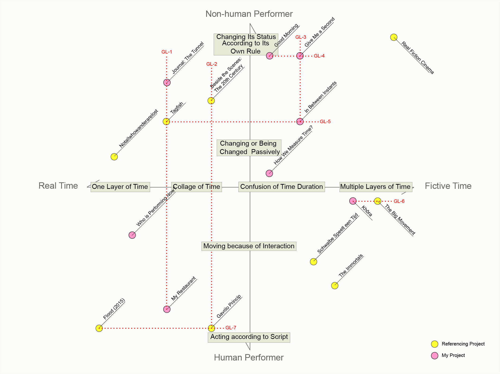

Diagram 9. Guide Lines.
The guide lines (GL) are shown after I place all works in the quadrant. The lines indicate the two or more works that have the same “variable” either on the X-axis: Time or on the Y-axis: Performer.
GL GL-1 GL-2 GL-3 GL-4 GL-5 GL-6 GL-7